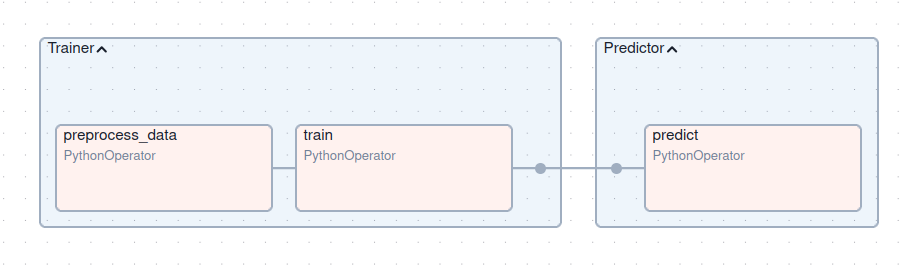
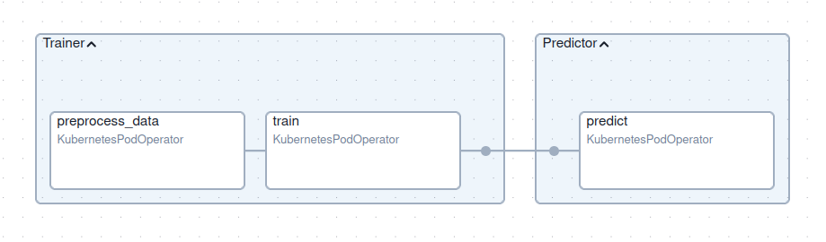
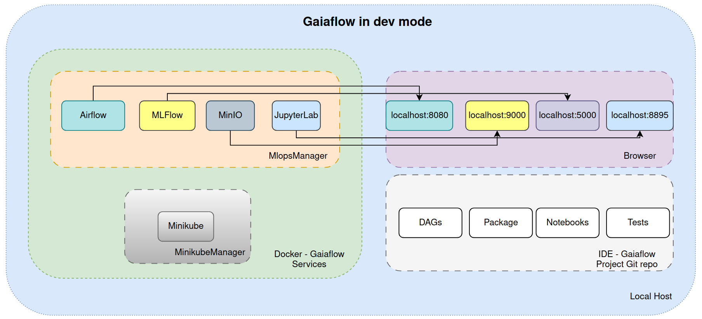
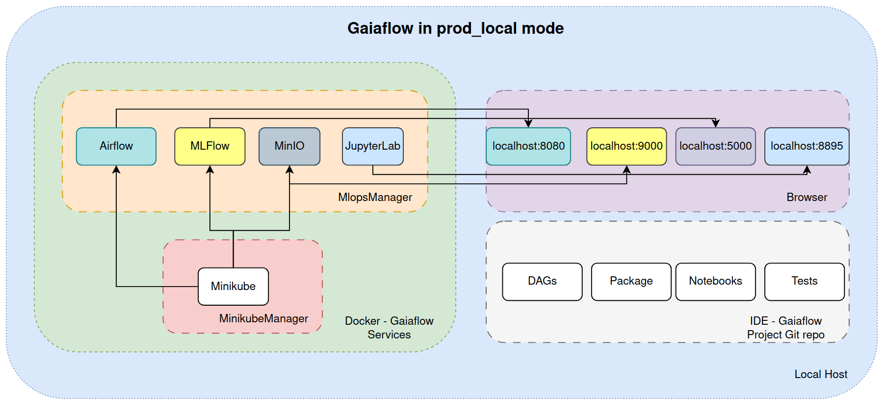
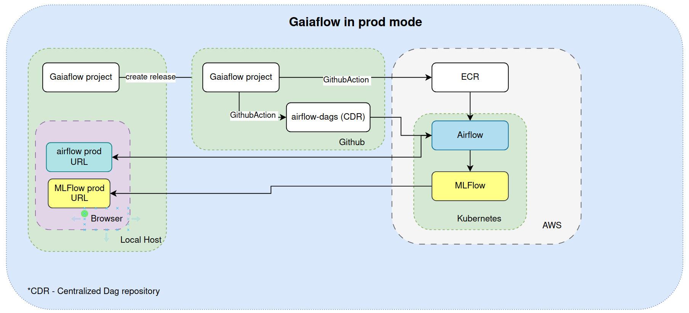

Getting Started with GaiaFlow
This guide will help you set up your environment, install dependencies, and generate your first project using the GaiaFlow template.
The following section provides an overview of the services provided by the Gaiaflow framework. For first-time users, we recommend that you read/skim through this to get an idea of what Gaiaflow can currently offer.
If you would like to start right away, then get started here
Overview
Gaiaflow provides a standardized project structure for ML initiatives at BC, integrating essential MLOps tools:
- Apache Airflow: For orchestrating ML pipelines and workflows
- MLflow: For experiment tracking and model registry
- JupyterLab: For interactive development and experimentation
- MinIO: For local object storage for ML artifacts
- Minikube: For local lightweight Kubernetes cluster
MLOps Components
Before you get started, let's explore the tools that we are using for this standardized MLOps framework
0. Cookiecutter
Purpose: Project scaffolding and template generation
- Provides a standardized way to create ML projects with predefined structures.
- Ensures consistency across different ML projects within BC
1. Apache Airflow
Purpose: Workflow orchestration
- Manages and schedules data pipelines.
- Automates end-to-end ML workflows, including data ingestion, training, deployment and re-training.
- Provides a user-friendly web interface for tracking task execution's status.
Key Concepts in Airflow
DAG (Directed Acyclic Graph)
A DAG is a collection of tasks organized in a structure that reflects their execution order. DAGs do not allow for loops, ensuring deterministic scheduling and execution.
Task
A Task represents a single unit of work within a DAG. Each task is an instance of an Operator. Gaiaflow provides task_factory for the ease of defining tasks in a DAG.
Operator
Operators define the type of work to be done. They are templates that encapsulate logic.
Common Operators:
-
PythonOperator: Executes a Python function.
-
BashOperator: Executes bash commands.
-
KubernetesPodOperator: Executes code inside a Kubernetes pod.
-
DummyOperator: No operation — used for DAG design.
For ease of use of Airflow, we have created a wrapper task_factory that
allows the user to create these tasks without worrying about which operator to
use. Read more here
Scheduler
The scheduler is responsible for triggering DAG runs based on a schedule. It evaluates DAGs, resolves dependencies, and queues tasks for execution.
XCom (Cross-Communication)
A lightweight mechanism for passing small data between tasks. Data is stored in Airflow’s metadata DB and fetched using Jinja templates or Python.
Airflow UI
- DAGs (Directed Acyclic Graphs): A workflow representation in Airflow. You can enable, disable, and trigger DAGs from the UI.
- Graph View: Visual representation of task dependencies.
- Tree View: Displays DAG execution history over time.
- Task Instance: A single execution of a task in a DAG.
- Logs: Each task's execution details and errors.
- Code View: Shows the Python code of a DAG.
- Trigger DAG: Manually start a DAG run.
- Pause DAG: Stops automatic DAG execution.
Common Actions
- Enable a DAG: Toggle the On/Off button.
- Manually trigger a DAG: Click Trigger DAG ▶️.
- View logs: Click on a task instance and select Logs.
- Restart a failed task: Click Clear to rerun a specific task.
2. MLflow
Purpose: Experiment tracking and model management
- Tracks and records machine learning experiments, including hyperparameters, performance metrics, and model artifacts.
- Facilitates model versioning and reproducibility.
- Supports multiple deployment targets, including cloud platforms, Kubernetes, and on-premises environments.
Core Components
Tracking
Allows logging of metrics, parameters, artifacts, and models for every experiment.
Models
MLflow models are saved in a standard format that supports deployment to various serving platform.
Model Registry
Central hub for managing ML models where one can register and version models.
MLFlow UI
- Experiments: Group of runs tracking different versions of ML models.
- Runs: A single execution of an ML experiment with logged parameters, metrics, and artifacts.
- Parameters: Hyperparameters or inputs logged during training.
- Metrics: Performance indicators like accuracy or loss.
- Artifacts: Files such as models, logs, or plots.
- Model Registry: Centralized storage for trained models with versioning.
Common Actions
- View experiment runs: Go to Experiments > Select an experiment
- Compare runs: Select multiple runs and click Compare.
- View parameters and metrics: Click on a run to see details.
- View registered model: Under Artifacts, select a model and click Register Model.
For a quick MLFLow tutorial, see more here
3. JupyterLab
Purpose: Interactive development environment
- Provides an intuitive and interactive web-based interface for exploratory data analysis, visualization, and model development.
4. MinIO
Purpose: Object storage for ML artifacts
- Acts as a cloud-native storage solution for datasets and models.
- Provides an S3-compatible API for seamless integration with ML tools.
- Suitable for Local development iterations using a portion of the data
5. Minikube
Purpose: Local Kubernetes cluster for development & testing
- Allows you to run a single-node Kubernetes cluster locally.
- Simulates a production-like environment to test Airflow DAGs end-to-end.
- Great for validating KubernetesExecutor, and Dockerized task behavior before deploying to a real cluster.
- Mimics production deployment without the cost or risk of real cloud infrastructure.
6. Task Factory
Purpose
Since this template is mainly for Python related packages, to make it easier
for users adopting airflow, we provide task_factory which is a unified task generator that abstracts away the complexity
of choosing the right Airflow operator depending on the deployment environment
(dev, prod_local, or prod). Its goal is to:
- Simplify task definitions
- Enable environment switching (
dev,prod,prod_local) - Unify local Python-based execution and Kubernetes-based execution
- Support XCom pulling, secret injection, and environment variables
So users will use task_factory to create tasks in an Airflow DAG.
NOTE: This however does not restrict the user from using a different operator of
their choice, but they would need to make sure that it works in both
dev and prod mode.
Task factory parameters
| Parameter | Type | Description |
|---|---|---|
task_id |
str |
Unique task identifier in all modes |
func_path |
str |
Module path to the function (e.g., my.module:func) in all modes |
func_kwargs |
dict |
Function arguments in all modes |
image |
str |
Docker image to use in prod/prod_local mode |
env |
str |
One of dev, prod, prod_local |
xcom_push |
bool |
Whether to push result to XCom in all modes |
xcom_pull_tasks |
dict |
Tasks and keys to pull from XCom in all modes |
secrets |
list |
Kubernetes secret names in prod/prod_local mode |
env_vars |
dict |
Extra environment variables in prod/prod_local mode |
retries |
int |
Number of times the task must be retried. Default is 2. For all modes |
Behavior by Environment:
dev mode:
- Local development mode.
- Uses
PythonOperator. - Fastest for iteration.
- Only
task_id,func_path,func_kwargs, andenvare used. image,secrets,env_varsare ignored.

prod_local mode:
-
Simulates production on your machine using
Minikube+KubernetesPodOperator. -
Requires:
image: Docker image (built locally from your project).secrets: For injecting secure credentials (e.g., to connect to MinIO or databases).env_vars: Environment-specific config (e.g., MLFLOW and S3 URIs).- You must run
MinikubeManagerbeforehand

prod mode:
- Uses
KubernetesPodOperator - Production environment in AWS Kubernetes cluster.
- Same requirements as
prod_local, but deployed to remote infra.
Use cases for environments:
| Environment | Use Case |
|---|---|
dev |
Local testing with PythonOperator (no Docker or Kubernetes needed) |
prod_local |
Testing production-like behavior on your machine via Minikube with KubernetesPodOperator |
prod |
Fully production environment on Kubernetes with KubernetesPodOperator |
Supported Operators:
| Operator | Used In | Purpose |
|---|---|---|
PythonOperator |
dev |
Runs functions directly in the scheduler |
KubernetesPodOperator |
prod_local, prod |
Runs tasks in isolated Docker containers via Kubernetes/Minikube |
secrets
- Used only in
prod_localandprodmodes. - Reference to Kubernetes secrets.
- Passed to
KubernetesPodOperatorto inject secure credentials (e.g., MinIO access keys). - Defined in your Kubernetes environment (Minikube or production cluster).
- Injected as environment variables using
env_from.
env_vars
- Used only in
prod_localandprodmodes. - Dictionary of environment variables needed at runtime.
- Used to connect to services like:
- MLflow Tracking Server (
MLFLOW_TRACKING_URI) - MinIO or S3-compatible storage (
MLFLOW_S3_ENDPOINT_URL) - In prod_local, these point to your local Minikube (e.g.,
192.168.49.1). - In prod, they point to production service URLs.
XCom Support (For all modes)
You can pass results between tasks using xcom_pull_tasks, regardless of mode.
It is used to pull data from the output (return_value) of a previous task using
Airflow’s XCom (Cross-Communication) mechanism.
NOTE:
- In dev, values are pulled directly from Airflow’s XCom system.
- In prod/prod_local, values are injected into the pod as environment
variables using templated Jinja strings and parsed at runtime by your
application.
Structure:
xcom_pull_tasks={
"argument_name": {
"task": "<task_group.task_id>" | "<task_id>", # Fully qualified task name. include task group if any
"key": "return_value", # Optional, defaults to return_value
},
}
- The keys in the dictionary become arguments passed to your function.
- The value is a reference to another task's output (via XCom).
- It works in all modes (dev, prod_local, prod), because task_factory handles the internals.
Example:
xcom_pull_tasks={
"preprocessed_path": {
"task": "Trainer.preprocess_data",
"key": "return_value"
}
}
preprocess_data from the Trainer task group and
passes it to the function that is invoked in the task.
Architecture
The Gaiaflow environment provides a local-first MLOps setup, enabling rapid development and production-like testing of Airflow DAGs along with a scaffolding of your python package.
After you develop your python package, you can create a reproducible and scalable workflow using Airflow which is provided via the Gaiaflow framework.
To make it easier for you to create DAGs, we provide you with task_factory,
an abstraction over the Airflow operators to let you create DAGs in
a more user-friendly way allowing you to switch between environments like dev
and prod_local to test your dags seamlessly.
You can read more about task_factory here
The following managers are provided to help setup the Gaiaflow framework on your machine.
| Service | Description |
|---|---|
MlopsManager |
Spins up MLOps services (Airflow, MLflow, etc.) for local development. |
MinikubeManager |
Spins up a local Kubernetes cluster for testing DAGs in a production-like environment before deploying. |
Gaiaflow framework can run in three modes after you have your python package ready to be deployed as a workflow:
Local development mode when task_factory's ENVIRONMENT is set to dev
In this mode, you can access Airflow, MLflow and Minio services via localhost.
Any changes that you make in the dags that use your package or the package
itself, will be promptly reflected in the Airflow UI allowing a faster
iterative development cycle.
For a reproducible and shareable ML project, we also provide MLFlow where you can log your experiments and models.
For providing the same API as S3 while avoiding the egress costs during development and testing, we provide MinIO which acts as a local object storage.

Local production like environment for testing when task_factory's ENVIRONMENT is set to prod_local
The same services are available as in the dev mode.
But to test your workflow in a production-like environment, we use Minikube local lightweight cluster which runs your tasks of your DAGs in an Kubernetes environment (which is how the DAGs in production run).

Pushing dags to production when task_factory's ENVIRONMENT is set to prod
In this mode, no more local services are useful, but instead a production Airflow, MLFlow and S3 is used once you create a release of your project.
As you can see in the diagram below, once you create a release, it triggers a CI that allows the CDR (Centralized Dag Repository) to pull your DAGs. The Airflow running on AWS is Gitsynced with this repository which allows your DAGs to be visible in the UI.
To allow for your package to run in any environment, we create Docker images that are pushed to ECR and then accessed by the Airflow tasks.

MlopsManager
Manages local MLOps components for day-to-day development and experimentation.
| Service | Description | Default Port(s) |
|---|---|---|
| Airflow | DAG orchestration & scheduling platform | 8080 (Web UI) |
| MLflow | ML lifecycle management (tracking, models) | 5000 (UI & API) |
| MinIO | Object storage (S3-compatible) | 9000 (S3 API), 9001 (UI) |
When to Use It
Use Mlops Manager when:
- You are testing Jupyter code with MLFlow/Minio
- You're iterating on pipeline code after creating your software package.
- You want to test Airflow DAGs, Jupyter notebooks, or other services locally.
- You need fast feedback loops before deploying to Minikube or production.
- You are using
task_factoryindevmode
CLI Reference
python gaiaflow_manager.py [OPTIONS]
| Flag / Option | Description | Example |
|---|---|---|
--start |
Start selected services | --start --service airflow |
--stop |
Stop selected services | --stop --service mlflow |
--restart |
Restart selected services | --restart --service airflow |
--service |
Choose service: airflow, mlflow, jupyter |
--service jupyter |
-c, --cache |
Use Docker cache during image builds | --start -c |
-j, --jupyter-port |
Port to expose Jupyter Notebook (default: 8895) | --start -j 8896 |
-v, --delete-volume |
Delete Docker volumes on shutdown | --stop -v |
-b, --docker-build |
Force rebuild Docker image | --start -b |
MinikubeManager
Used to create a lightweight local Kubernetes cluster that simulates production, for validating DAGs using KubernetesExecutor or custom pods.
| Component | Description |
|---|---|
| Minikube | Local, single-node Kubernetes cluster |
When to Use It
Use Minikube Manager when:
- You want to test Docker images and airflow tasks in a local Kubernetes environment.
- You’re preparing for deployment to production Airflow on AWS.
- You're using
task_factoryinprod_localmode.
CLI Reference
python minikube_manager.py [OPTIONS]
| Flag / Option | Description | Example |
|---|---|---|
--start |
Start the Minikube cluster | --start |
-s, --stop |
Stop the Minikube cluster | -s |
-r, --restart |
Restart the Minikube cluster | -r |
--build-only |
Only build the Docker image inside the Minikube context | --build-only |
--create-config-only |
Generate inline config for use in Docker Compose | --create-config-only |
--create-secrets |
(might be removed) Create Kubernetes secrets for use in pods | --create-secrets |
Managing Secrets (TODO: talk with Tejas)
You can now create any secrets dynamically:
create_secrets(secret_name="my-creds", secret_data={"API_KEY": "1234", "ENV": "dev"})
This creates Kubernetes secrets inside the Minikube cluster.
Best Practice: Use environment variables or secure vaults in production. Avoid hardcoding secrets.
Image Naming Best Practices (TODO: talk with Tejas)
We recommend using:
<project-name>/<package-name>:<version>
Where version is fetched from your Python package's __version__.
Getting Started
Please make sure that you install the following from the links provided as they have been tried and tested.
If you face any issues, please check out the troubleshooting section
Prerequisites
- Docker and Docker Compose
- Mamba - Please make sure you
install
Python 3.12as this repository has been tested with that version. - Minikube on Linux
- Minikube on Windows
Docker and Docker compose plugin Installation
For Linux users: please follow the steps mentioned in this link
For Windows users: please follow the steps mentioned in this link
This should install both Docker and Docker compose plugin. You can verify the installation by these commands
docker --version
docker compose version
Docker version 27.5.1, build 9f9e405
Docker Compose version v2.32.4
Once the pre-requisites are done, you can go ahead with the project creation:
-
Create a separate environment for cookiecutter
mamba create -n cc cookiecutter ruamel.yaml mamba activate cc -
Generate the project from template:
cookiecutter https://github.com/bcdev/gaiaflow
When prompted for input, enter the details requested. If you dont provide any input for a given choice, the first choice from the list is taken as the default.
Once the project is created, please follow along here.
Troubleshooting
-
If you are windows, please use the
miniforge promptcommandline. -
If you face issue like
Docker Daemon not started, start it using:and try the docker commands again in a new terminal.sudo systemctl start docker -
If you face an issue as follows:
Got permission denied while trying to connect to the Docker daemon socket at unix:///var/run/docker.sock:, do the followingand try the docker commands again in a new terminal.sudo chmod 666 /var/run/docker.sock -
If you face an issue like
Cannot connect to the Docker daemon at unix:///home//.docker/desktop/docker.sock. Is the docker daemon running?, it is likely because of you have two contexts of docker running.
To view the docker contexts,
docker context ls
docker context show
To use the default context, do this:
docker context use default
Check for the following file:
cat ~/.docker/config.json
{
"auths": {},
"credsStore": "desktop"
}
- If you face some permissions issues on some files like
Permission Denied, as a workaround, please use this and let us know so that we can update this repo.sudo chmod 666 <your-filename>
If you face any other problems not mentioned above, please reach out to us.